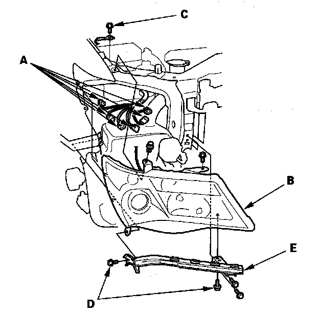

Headlight Replacement
Headlight Replacement1. Remove the front bumper.

2. Remove the connectors (A) from the headlight assembly (B).
3. Remove the security strap bolt (C).
4. Remove the clips and bolts, then remove the headlight.
5. Remove the bolt (D) and the corner upper beam (E) from the headlight.
6. Install the headlight in the reverse order of removal.
7. After the replacement, then do the headlights learning procedure and aim the headlights per local requirements.